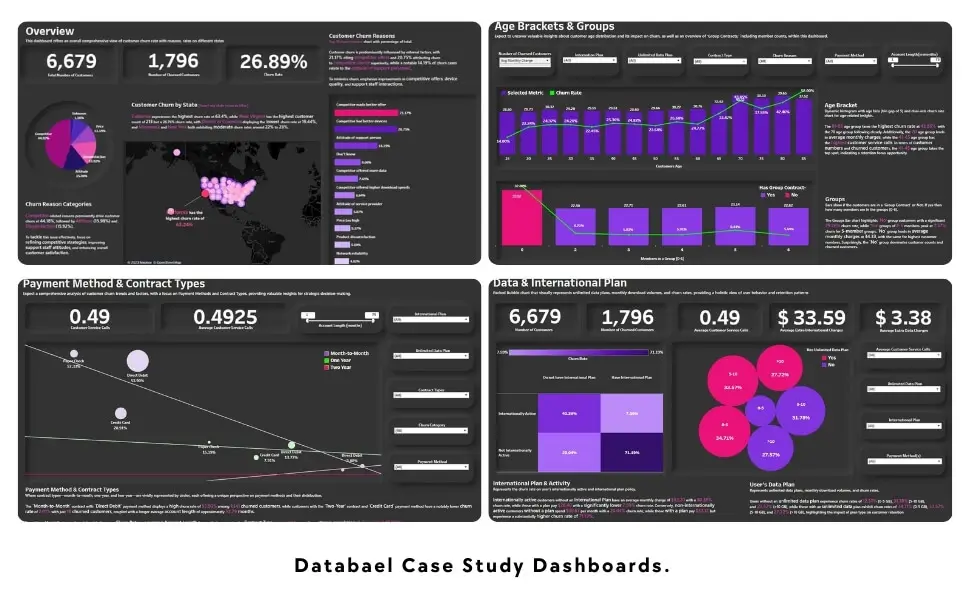

Project Details
Databel: Customer Churn Analysis on Tableau
This is a case study project from Data Analysis in Tableau track from Datacamp.
Situation
Customer churn, or attrition, is a critical metric for businesses, representing the loss of subscribers or employees over a specified period. This project focuses on analyzing customer churn to identify the reasons behind it and develop strategies to mitigate it. The analysis provides insights into various factors affecting churn and helps Databel make informed decisions to enhance customer retention.

View Customer Churn Analysis Dashboard
Task
The primary objective was to understand the underlying reasons for customer churn and identify effective strategies to reduce it. The dashboard answers critical business questions to provide valuable insights into Databel's operations and customer behavior.
Business Questions Have to Address:
- What is the total churn rate for Databel?
- Does the count of unique customers match the total customer count?
- Which reason is not among the top 5 churn reasons?
- What is the most prevalent churn reason?
- Which state has the highest churn rate?
- Is the churn rate for senior citizens significantly higher than the average? What is the churn rate for this group?
- What is the average churn rate for individuals aged 55-60?
- Which group size has the lowest churn rate?
- What is the churn rate for non-group customers?
- What is the churn rate for customers on an unlimited plan who use less than 5 GB of data?
- How many customers with an international plan but no international calls have high churn rates?
- What is the average monthly charge for this group?
- How many churned customers are on a Month-to-Month contract and pay via Direct Debit?
- What is the churn rate in Alaska (AK) for customers on a Two-Year contract?
- What is the churn rate for customers outside a group with an account length of 12 months or less?
- What is the average number of customer service calls for Month-to-Month customers paying by Direct Debit?
- What is the average extra data charge (to two decimal points) for customers not on an unlimited plan who use less than 5 GB?
Action
Created four dashboard pages to showcase all the business answers, the pages are:
The Overview Page
Features interactive donut pie charts, a versatile bar plot, and an informative map. Provides a comprehensive view of churn data and allows dynamic data filtering.
Age Brackets and Groups Page
Presents insights into age groups and demographics with interactive bar plots. Includes user-friendly filtering options for detailed analysis.
Payment and Contract Type Dashboard
Displays diverse payment methods and contract types with interactive filters. Facilitates in-depth exploration of customer payment and contract preferences.
Data and International Plan Dashboard
Utilizes matrix charts and informative cards to communicate insights. Includes a dynamic filter for exploring data and international plan usage.
Result
The Tableau analysis provided valuable insights into Databel's churn rates, highlighting key factors contributing to customer attrition. The visualizations in the dashboard effectively communicated these findings, enabling stakeholders to understand churn patterns and make informed decisions to improve customer retention.